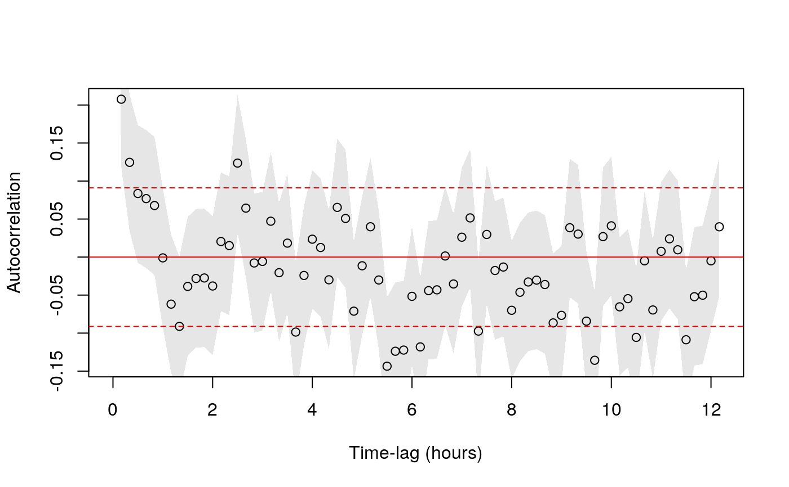
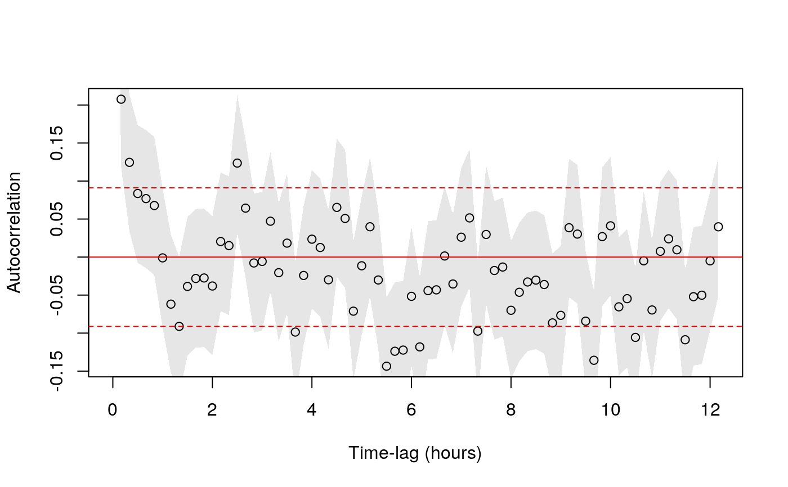

Estimate RMS UERE from calibration data
uere.RdFunctions for estimating and assigning the root-mean-square User Equivalent Range Error (UERE) of a GPS device from calibration data.
uere(data)
uere(data) <- value
uere.fit(data,precision=1/2)
# S3 method for UERE
summary(object,level=0.95,...)Arguments
- data
telemetryobject or list of telemetry objects, preferably with DOP columns.- value
RMS UERE value(s) to assign to telemetry data (see details).
- precision
Fraction of maximum possible digits of precision to target in categorical error fitting.
precision=1/2results in about 7 decimal digits of precision.- object
UEREobject to summarize or list ofUEREobjects to compare.- level
Confidence level for UERE estimate confidence intervals.
- ...
Further arguments are ignored.
Details
Often times GPS animal tracking devices return HDOP values but do not specifiy the device's RMS UERE necessary to transform the HDOP values into absolute errors.
uere.fit() allows users to estimate the RMS UERE from calibration data, where the device was left fixed over a period of time.
The calibration RMS UERE can then be applied to tracking data with the uere()<- assignment method.
Otherwise, when error=TRUE in ctmm, ctmm.fit will estimate the RMS UERE simultaneously with the movement model, which is less reliable than using calibration data.
summary() applied to single UERE object will return RMS UERE parameter estimates and confidence intervals in meters, while summary() applied to a list of UERE objects will return a model-selection table, with AICc and reduced Z squared (goodness of fit) values.
Value
The RMS UERE estimate.
References
C. H. Fleming et al, ``A comprehensive framework for handling location error in animal tracking data'', bioRxiv 2020.06.12.130195 (2020) doi:10.1101/2020.06.12.130195 .
Note
The GPS device should be fixed during calibraiton.
See also
Examples
# \donttest{
# Load package and data
library(ctmm)
data(turtle)
# the first two datasets are calibration data
names(turtle)
#> [1] "60s" "90s" "F231" "F403"
# estimate RMS UERE from calibration data
UERE <- uere.fit(turtle[1:2])
# inspect UERE estimate
summary(UERE)
#> , , horizontal
#>
#> low est high
#> 2D 22.786528 29.598802 36.397467
#> 3D 6.477391 6.946024 7.414237
#>
# assign RMS UERE to entire dataset
uere(turtle) <- UERE
# calculate residuals of calibration data
RES <- lapply(turtle[1:2],residuals)
# scatter plot of residuals with 50%, 95%, and 99.9% coverage areas
plot(RES,col.DF=NA,level.UD=c(0.50,0.95,0.999))
 # check calibration data for autocorrelation using fast=FALSE because samples are small
ACFS <- lapply(RES,function(R){correlogram(R,fast=FALSE,dt=10 %#% 'min',trace=FALSE)})
# pooling ACFs
ACF <- mean(ACFS)
plot(ACF)

# }
# check calibration data for autocorrelation using fast=FALSE because samples are small
ACFS <- lapply(RES,function(R){correlogram(R,fast=FALSE,dt=10 %#% 'min',trace=FALSE)})
# pooling ACFs
ACF <- mean(ACFS)
plot(ACF)

# }